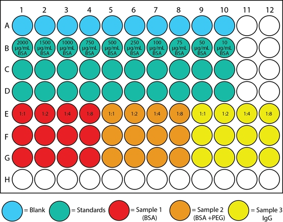
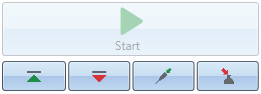

Pipette your samples in an appropriate scheme on a well plate. An example scheme from the undergrad labs is shown below. Include blanks, standards, and your sample

Start the SkanIt software on the attached PC
Click Other instrument types and select New session for Varioskan LUX
Select Plate Layout from the tree on the left
In the Plate template dropdown menu, select the appropriate plate for analysis, most likely Corning, U-bottom, 96-well
Populate the wells in the software according to their sample type. You can drag the cursor to populate multiple wells
Select Protocol in the session tree and click Absorbance, Fluorescence, Luminescence, or TRF depending on your assay. Input the appropriate parameters, e.g. measurement wavelength for Absorbance
Optional Select Protocol in the session tree to change measurement order and delay
Optional Select Report to customize the output of your results
In the bottom left of the window, click the button with the red arrow to eject the plate reader tray

Insert the plate into the tray with the lid off. Leaving the lid on will cause a jam
Click the button with the green upwards arrow to insert the plate into the instrument
Click Start to begin the assay. Save your experiment with the appropriate directory and filename
Report branch, click Summary. From the top right, select your desired reporting format to export.For more information see the full instruction manuals at
https://assets.thermofisher.com/TFS-Assets/LCD/manuals/Varioskan-LUX-Technical-Manual.pdf
and
https://assets.thermofisher.com/TFS-Assets/LCD/manuals/Varioskan-LUX-User-Manual.pdf